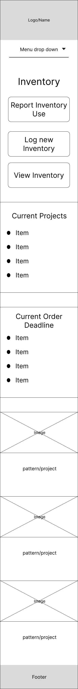
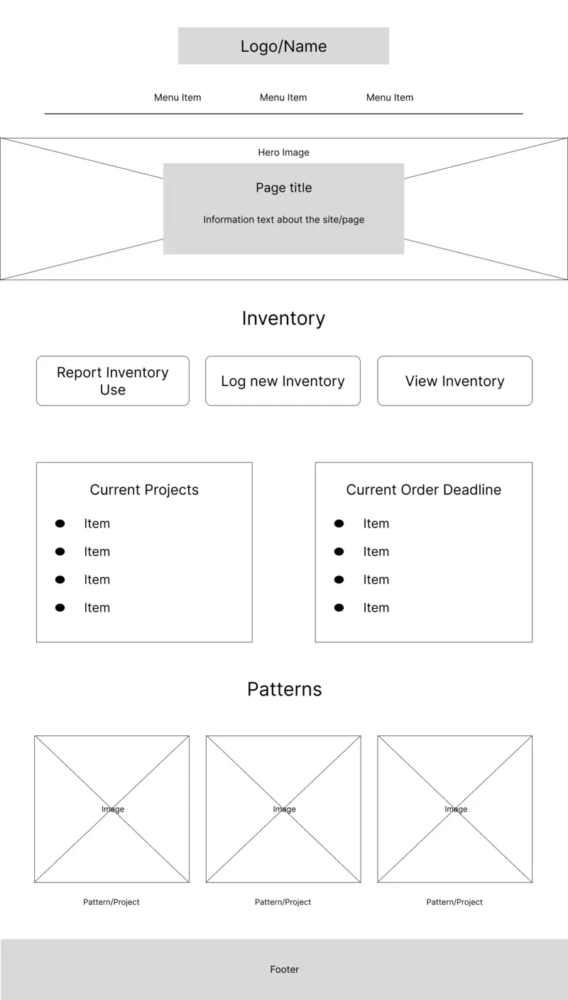

Site Name: Mountain Dream Boutique
This name reflects the business name I chose for my crafting business. This will be used by me to track inventory of my supplies and my different patterns for my business.
Site Purpose: Track inventory and patterns for my business
This site will be used to track some of my different supplies (vinyl, yarn, fabric etc.) and well as hold the patterns that I use for my business. I will use different forms to add to take away inventory.
Scenarios
- What patterns of vinyl do I have on hand to use?
- Where is the pattern for a project?
- What have I made in the past?
Color Schema
Primary Color: #F7F4F2
Secondary Color: #3A3743
Accent Color 1: #E0D2CD
Accent Color 2: #D5C3C9
Accent Color 3: #B8B2BD
Typography
Headers will be Crimson Pro, serif
Paragaphs will be Nunito, sans-serif
Wireframe

